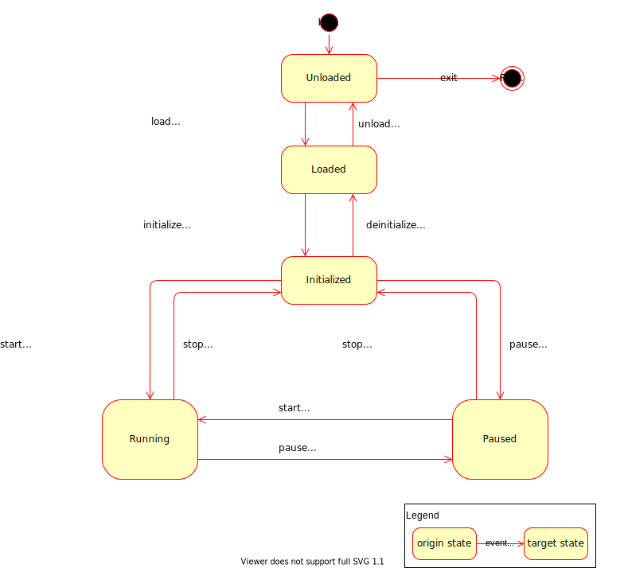
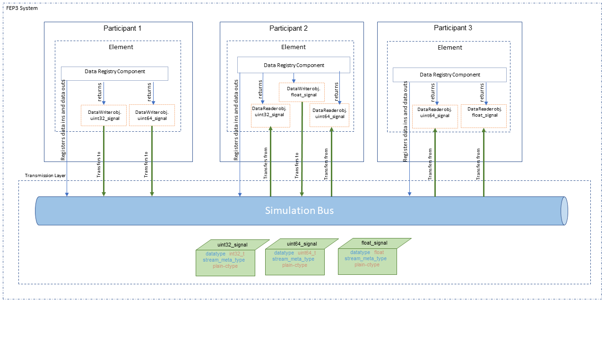

FEP Participant Library
Basic Concepts
In this chapter the basic concepts of FEP SDK will be explained by going through the example code of Demo Minimal Participant.
After this chapter the user will be able to create a basic FEP Participant, with a simple Job that reads and writes data.
/**
* @file
* @copyright
* @verbatim
Copyright @ 2021 VW Group. All rights reserved.
This Source Code Form is subject to the terms of the Mozilla
Public License, v. 2.0. If a copy of the MPL was not distributed
with this file, You can obtain one at https://mozilla.org/MPL/2.0/.
If it is not possible or desirable to put the notice in a particular file, then
You may include the notice in a location (such as a LICENSE file in a
relevant directory) where a recipient would be likely to look for such a notice.
You may add additional accurate notices of copyright ownership.
@endverbatim
*/
#include <fep3/cpp.h>
#include <chrono>
using namespace fep3;
using namespace std::chrono_literals;
class MinimalDataJob : public cpp::DataJob {
public:
MinimalDataJob() : cpp::DataJob("multiply", 1s) {
_reader = addDataIn("small_value", base::StreamTypePlain<int32_t>());
_writer = addDataOut("big_value", base::StreamTypePlain<int32_t>());
registerPropertyVariable(_factor, "multiplication_factor");
}
//Begin(DataJob_process)
Result process(Timestamp sim_time_of_execution) {
updatePropertyVariables();
fep3::Optional<int32_t> received_plain_value;
*_reader >> received_plain_value;
if (received_plain_value.has_value())
{
auto value = received_plain_value.value() * _factor;
FEP3_LOG_INFO("received "
+ std::to_string(received_plain_value.value())
+ " written"
+ std::to_string(value));
*_writer << value;
}
return {};
}
//End(DataJob_process)
cpp::PropertyVariable<int32_t> _factor{ 2 };
cpp::DataReader* _reader;
cpp::DataWriter* _writer;
};
int main(int argn, const char* argv[]) {
auto part = cpp::createParticipant<cpp::DataJobElement<MinimalDataJob>>(
argn, argv, "my_participant", "my_system");
return part.exec();
}
Components
The functional parts of the FEP Participant are called FEP Components. Each FEP Component covers some specific functionality, e.g. functionality to exchange simulation data with other participants.
FEP Components can be accessed via the FEP Participant API’s
template method getComponent() in fep3::arya::Participant, passing the FEP Component Interface
as template argument.
Jobs
Jobs are small runnable units to implement a functionality that needs to be part of a distributed scheduler. At the moment the configurations of jobs are only possible for cyclic time triggered events. In future there might be a possibility to add data triggered jobs as well.
The job class fep3::arya::IJob has three interface functions.
The
fep3::arya::IJob::executeDataIn()is to read and prepare the incoming data for the execute call. Do not implement any functional behavior in here, but read all data from the IDataRegistry::IDataReader.The
fep3::arya::IJob::execute()is to implement the jobs functional behavior.The
fep3::arya::IJob::executeDataOut()is to flush thefep3::core::arya::DataWriterqueues.
As a first example a job that is triggered with a default period is implemented, as shown in Demo Minimal Participant.
First the Class MinimalDataJob has to be defined and the fep3::cpp::arya::DataJob::process() method implemented, which is the actual method to be periodically called.
The MinimalDataJob, inherits from fep3::cpp::arya::DataJob and not directly from fep3::arya::IJob, since fep3::cpp::arya::DataJob also encapsulates
some steps that otherwise would have to be implemented if directly inheriting from fep3::arya::IJob.
Result process(Timestamp sim_time_of_execution) {
updatePropertyVariables();
fep3::Optional<int32_t> received_plain_value;
*_reader >> received_plain_value;
if (received_plain_value.has_value())
{
auto value = received_plain_value.value() * _factor;
FEP3_LOG_INFO("received "
+ std::to_string(received_plain_value.value())
+ " written"
+ std::to_string(value));
*_writer << value;
}
return {};
}
Then the participant has to be instantiated and executed (Execution).
auto part = cpp::createParticipant<cpp::DataJobElement<MinimalDataJob>>(
argn, argv, "my_participant", "my_system");
return part.exec();
Simulation Data
In Jobs, it is described how a runnable with a default periodicity can be triggered. However, it would be more useful if this runnable could receive and send data. Let’s assume that the runnable should receive an integer, multiple it by 2 and pass it to the output.
For this a data source and a data sink are needed, that are fep3::arya::IDataRegistry::IDataReader and arya::IDataRegistry::IDataWriter which read or write a dedicated signal respectively.
So, in this example, input is read from “small_value” signal and output is written to the “big_value” signal.
First the reader is initialized
_reader = addDataIn("small_value", base::StreamTypePlain<int32_t>());
and the writer.
_writer = addDataOut("big_value", base::StreamTypePlain<int32_t>());
Now what only remains is to read the input
*_reader >> received_plain_value;
calculate the output value
auto value = received_plain_value.value() * _factor;
and write it in the MinimalDataJob::Process() method.
*_writer << value;
The full example can be found in Demo Minimal Participant.
For a detailed explanation of the data exchange see Communication.
Simulation Time
In Simulation Data, it is described how a job can interact with signals, in this section we will see how we can set the job’s cycle time. The Scheduler Service and its Active scheduler are responsible for the triggering each time a Job’s cycle time passes.
A job’s cyclic time can be configured with fep3::arya::JobConfiguration as described in Job Configuration .
fep3::cpp::arya::DataJob provides two constructors to set only the cyclic time fep3::cpp::arya::DataJob::DataJob(const std::string &, fep3::arya::Duration)() or pass the
fep3::arya::JobConfiguration in fep3::cpp::arya::DataJob::DataJob(const std::string&, fep3::arya::JobConfiguration)()
Configuration
Assuming now that the job should be able to work with some parameters that will not compile time variables, rather could be changed in runtime.
After registering a property fep3::cpp::PropertyVariable
registerPropertyVariable(_factor, "multiplication_factor");
the values of the property variables are updated
updatePropertyVariables();
and the bonded variable can be used for accessing the property value.
auto value = received_plain_value.value() * _factor;
Detailed description on properties can be found in Configuration Service.
Logging
In case a logging mechanism is needed, there are dedicated macros that provide logging for various severity grades (DEBUG, FATAL, ERROR, WARNING, INFO, RESULT). An example of the logging macro usage is included in Demo Minimal Participant.
FEP3_LOG_INFO("received "
+ std::to_string(received_plain_value.value())
+ " written"
+ std::to_string(value));
Detailed description on logging service can be found in FEP Logging Service
Advanced Concepts
In Basic Concepts a basic example of a FEP Participant was presented, which was using some helper classes of the FEP SDK, that encapsulate some of the implementation that otherwise has to be done by the user. In this chapter, some more advanced concepts will be presented.
FEP Element
Embedding the element in a FEP participant
A custom Element should inherit from fep3::core::arya::ElementConfigurable or fep3::core::arya::ElementBase.
class EasyCoreReceiverElement : public core::ElementConfigurable
{
public:
EasyCoreReceiverElement()
: core::ElementConfigurable("Demo Element Base Receiver Type",
FEP3_PARTICIPANT_LIBRARY_VERSION_STR)
In order to create an object of fep3::arya::Participant there are some overloads of the function to choose from in
fep3::arya::createParticipant() , fep3::cpp::arya::createParticipant(), fep3::core::arya::createParticipant(),
providing different alternatives for initialization.
In this example the following overload is used
template<typename element_factory> createParticipant(int , char const *const *, const std::string& , const fep3::arya::ParserDefaultValues&)
that provides also the possibility of parsing the command line arguments.
auto part = core::createParticipant<core::ElementFactory<EasyCoreReceiverElement>>(
argc, argv,
"My Demo Participant Version 1.0",
{ "demo_core_receiver", "demo_system", "" });
The fep3::arya::IElementFactory can either be passed as a template parameter or as a constructor argument and it is the interface that will eventually call
the constructor of the custom Element Class and create an object instance during the load_element action of the State Machine.
The destructor of the created object is called in the unload_element action of the State Machine.
The lifetime of the created Factory object on the other hand is equal to the lifetime of the participant, meaning there is only one instance of fep3::arya::IElementFactory
created during the fep3::arya::Participant’s lifetime.
Creating participant overloads
These convenience wrappers serve common use cases and require less arguments to be passed. For stand-alone participant executables it is recommended to use those overloads that take ‘argc’ and ‘argv’ as arguments in order to enable command line argument parsing, so that parameters like name of participant or system can be changed on startup and are not hard-coded into them.
createParticipant convenience wrappers of the CPP Library
These convenience wrappers are for simple participants where the entire implementation can be described with a fep3::cpp::arya::DataJob and no custom element is required.
// Recommended variation with command line argument parsing
Participant part = fep3::cpp::createParticipant<fep3::cpp::DataJobElement<MyDataJob>>(argc, argv, "MyParticipant", "MySystem");
// Most simple variations with hard-coded participant and system name
fep3::cpp::createParticipant<fep3::cpp::DataJobElement<MyDataJob>>("MyParticipant");
fep3::cpp::createParticipant<fep3::cpp::DataJobElement<MyDataJob>>("MyParticipant", "MySystem");
To add user defined command line arguments a parser object has to be created and passed to the createParticipant function.
// Variable to which the command line argument gets copied to. Set the default value here.
std::string project = "fep";
// Add the user defined argument to a clara::Parser object. Make sure to not overwrite any options already defined by the SDK.
clara::Parser parser;
parser |= clara::Opt(project, "string")
["-p"]["--project"]
("Set the project the participant is part of");
// Create a CommandLineParser object with the factory function. This will add the natively supported command line options to the parser.
std::unique_ptr<CommandLineParser> clp = fep3::CommandLineParserFactory::create(parser, ParserDefaultValues{"MyParticipant", "MySystem", ""});
// Pass the CommandLineParser object to the createParticipant function
Participant part = fep3::cpp::createParticipant<fep3::cpp::DataJobElement<MyDataJob>>(argc, argv, std::move(clp));
// Alternatively call the factory function inline. The last value of the ParserDefaultValues (server address url) can be omitted
// but not all compilers support partially defined initializer lists.
fep3::cpp::createParticipant<fep3::cpp::DataJobElement<MyDataJob>>(argc, argv, CommandLineParserFactory::create(parser, {"MyParticipant", "MySystem", ""}));
createParticipant convenience wrappers of the Core Library
These convenience wrappers are for participants with custom elements and also allow to define the element version and a default value for the system address URL.
// Recommended variation with command line argument parsing
Participant part = fep3::core::createParticipant<fep3::core::ElementFactory<MyElement>>(argc, argv, "1.2.3", {"MyParticipant", "MySystem", ""});
// If the participant and system name shall always be passed as command line arguments, the ParserDefaultValues can also be omitted.
fep3::core::createParticipant<fep3::core::ElementFactory<MyElement>>(argc, argv, "1.2.3");
This will make the optional arguments required and change how the executable is called:
With default values defined:
> myParticipantExecutable -n MyParticipant -s MySystem
Without default values defined:
> myParticipantExecutable MyParticipant MySystem
When having access to ‘argc/argv’, it is strongly recommended to also pass those to your participant. Only skip this, to provide other means to e.g. configure your participants name and system.
fep3::core::createParticipant<fep3::core::ElementFactory<MyElement>>("MyParticipant", "1.2.3", "MySystem");
Adding user defined command line arguments is identical to the CPP library. Only the fep3::arya::createParticipant() call is slightly different.
fep3::core::createParticipant<fep3::core::ElementFactory<MyElement>>(argc, argv, "1.2.3", CommandLineParserFactory::create(parser, {"MyParticipant", "MySystem", ""}));
Execution
After instantiating the participant, it has to be executed via fep3::arya::Participant::exec(). If the execution succeeds,
this method blocks until the State Machine reaches the state Final.
State Machine
A participant instance has the following state machine:
Attention
State ‘Paused’ is not supported yet. Trying to set a participant and its components to state ‘Paused’ results in an error.
Once the participant instance has been created, its state machine is in state ‘Unloaded’. The state machine can then be controlled by events via the Service Bus.
The following table shows the calls to the FEP Participant API as performed by the element-related guards and actions (postfixed by ..._element in the state machine diagram):
guard/action |
calls on the FEP Participant API |
|---|---|
load_element |
|
unload_element |
|
initialize_element |
|
deinitialize_element |
|
run_element |
|
stop_element |
|
Note: For a description of the calls to the FEP Component API as performed by the component-related guards and actions (postfixed by ..._components in the state machine diagram),
please refer to Calls to the fep3::arya::IComponent interface.
Implementing the fep3::core::arya::ElementBase::load() and fep3::core::arya::ElementBase::initialize()
Typically in the fep3::core::arya::ElementBase::load() overload of the custom Element class the job is registered
fep3::Result load() override
{
//register the job
return core::addToComponents("receiver_job", _my_job, { 1s }, *getComponents());
}
whereas in the fep3::core::arya::ElementBase::initialize() any data receivers or writers of the Element are registered.
fep3::Result initialize() override
{
//register the data
auto data_adding_res = core::addToComponents(*_data_reader_plain_c_type, *getComponents());
if (isFailed(data_adding_res)) return data_adding_res;
return {};
}
For loading external data in the Element class (for example from an external file), either of these two functions could be used.
Using a custom ElementFactory
In some use cases the implementation of a custom ElementFactory should be necessary. For example, in cases that additional arguments should be passed to the constructor of the Element Class.
In this exemplary use case, some command line arguments have to be forwarded to the Element Class constructor.
The CustomElementFactory is defined
class CustomElementFactory : public fep3::arya::IElementFactory
{
public:
CustomElementFactory(int add_offset, const std::string& file_path)
: _add_offset(add_offset)
, _file_path(file_path)
{
}
/**
* Creates the element
*
* @param[in] components components reference to provide the component access
* @returns Shared pointer to the created element.
*/
std::unique_ptr<arya::IElement> createElement(const arya::IComponents& components) const override
{
return std::make_unique<EasyCoreReceiverElement>(_add_offset, _file_path);
}
//End(createElement)
private:
const int _add_offset;
const std::string _file_path;
};
The constructor of EasyCoreReceiverElement is now modified to accommodate for the additional arguments
EasyCoreReceiverElement(int add_offset, const std::string& file_path)
: core::ElementConfigurable("Demo Element Base Receiver Type",
FEP3_PARTICIPANT_LIBRARY_VERSION_STR)
, _add_offset(add_offset)
, _custom_message(read_message_from_file(file_path))
that are used in the EasyCoreReceiverElement::process() function
fep3::Optional<int32_t> received_plain_value;
*_data_reader_plain_c_type >> received_plain_value;
if (received_plain_value.has_value())
{
auto value_with_offset = received_plain_value.value() + _add_offset;
FEP3_LOG_INFO("received plain value with offset:" + std::to_string(value_with_offset));
FEP3_LOG_INFO("custom log message:" + _custom_message);
}
else
{
FEP3_LOG_INFO("received no value:");
FEP3_LOG_INFO("custom log message:" + _custom_message);
}
The constructor simply stores the command line parameters and forwards them in the constructor EasyCoreReceiverElement::EasyCoreReceiverElement() when
CustomElementFactory::createElement() is called during the load_element action of State Machine.
std::unique_ptr<arya::IElement> createElement(const arya::IComponents& components) const override
{
return std::make_unique<EasyCoreReceiverElement>(_add_offset, _file_path);
}
So, by using a custom factory, the main function should look like this:
int main(int argc, const char* argv[])
{
assert(argc == EXPECTED_ARG_COUNT);
try
{
auto part = createParticipant("demo_core_receiver",
"My Demo Participant Version 1.0",
"demo_system",
std::make_shared<CustomElementFactory>(
std::stoi(argv[OFFSET_ARG_INDEX]),
argv[MESSAGE_ARG_INDEX]
)
);
return part.exec();
}
catch (const std::exception& ex)
{
std::cerr << ex.what();
return 3;
}
}
Configurable FEP Element
The fep3::core::arya::ElementConfigurable provides the ability to develop a FEP Element that has a configuration. A configuration contains properties that are not
meant to be changed periodically, but can be used to set static data, for more details see Configuration Service Overview.
The convenience class fep3::core::arya::ElementConfigurable can be used for easy setting up a configurable FEP Element:
class EasyCoreSenderElement : public core::ElementConfigurable
The properties should be then member of the element class:
core::PropertyVariable<int32_t> _prop_to_send_as_integer{ 1 };
and registered in the constructor:
Then the updated element value can be accessed only after calling fep3::base::arya::Configuration::updatePropertyVariables()
updatePropertyVariables();
int32_t value_to_write = _prop_to_send_as_integer;
By inheriting from cpp:class:fep3::core::arya::ElementConfigurable, the participant will have a property node named element. In this example, assuming the system is called demo_system and the participant demo_participant, the property value can be accessed from the fep_control as follows:
getParticipantProperty demo_system demo_core_sender element/integer_value
If the property value has to be set to 5 for example, this can also be done from the fep_control:
setParticipantProperty demo_system demo_core_sender element/integer_value 5
Properties can also be changed programmatically as shown in Overview. It is also possible to have an observer reacting on a property value change, see Property observers.
Note
Regarding the proper use cases for properties please see also (Mis)Using Properties in FEP
Component Properties
The following table summarizes the properties that are used by the FEP components, along with the member function of the compoment that the
fep3::base::arya::Configuration::updatePropertyVariables() is called.
Component |
Type |
Property Name |
Default Value |
updatePropertyVariables called |
Reference |
|---|---|---|---|---|---|
std::string |
main_clock |
local_system_realtime |
tense() |
||
int64_t |
time_update_timeout |
5000000000 |
tense() |
||
double |
time_factor |
1.0 |
tense() |
||
int64_t |
step_size |
100000000 |
tense() |
||
std::string |
timing_master |
“” |
initialize() |
||
int64_t |
sync_cycle_time |
100000000 |
initialize() |
||
std::string |
mapping_configuration |
“” |
initialize(), registerDataIn() |
||
std::string |
mapping_configuration_file_path |
“” |
initialize(), registerDataIn() |
||
std::string |
default_sinks |
console |
initialize() |
||
int32_t |
default_severity |
LoggerSeverity::info |
initialize() |
||
std::string |
default_sink_file |
“” |
initialize() |
||
std::string |
scheduler |
clock_based_scheduler |
tense() |
||
int32_t |
participant_domain |
5 |
initialize() |
Communication
The participants in a FEP3 System can communicate using signals. A Signal is defined by direction(input or output), name, and Stream Meta Type. To exchange data between participants, communicating participants should create Data Reader or Data Writer objects using the same name and Stream Type. fep3::arya::IDataRegistry is responsible for creating Data Reader and Data Writer objects to a signal. Data Reader objects are represented by fep3::arya::IDataRegistry::IDataReader class and
and Data Writer objects are represented by fep3::arya::IDataRegistry::IDataWriter class. fep3::arya::IDataRegistry::IDataReader and fep3::arya::IDataRegistry::IDataWriter are responsible for reading and writing samples from or to the simulation bus. The container to write and read data is fep3::arya::IDataSample. This data is classified via the fep3::arya::IStreamType .
After this chapter the user will have detailed knowledge about data sending and receiving data by using the fep3::arya::IDataRegistry .
Overview
The fep3::arya::IDataRegistry interface is responsible for
registering data readers and data writers
registering data receive listeners for data triggered reception
getting reader and writer objects from the simulation bus
To read and write samples from or to the simulation bus the fep3::arya::IDataRegistry::IDataReader and fep3::arya::IDataRegistry::IDataWriter classes from the data registry are be used. fep3::arya::IDataRegistry creates reader (fep3::arya::IDataRegistry::IDataReader) and writer (fep3::arya::IDataRegistry::IDataWriter) objects. To register the data readers and the data writers use fep3::arya::IDataRegistry::registerDataIn() and fep3::arya::IDataRegistry::registerDataOut() functions. After registration, make a call to fep3::arya::IDataRegistry::getReader() or fep3::arya::IDataRegistry::getWriter() functions to access a reader or a writer object.
fep3::Result initialize() override
{
fep3::Result res = _data_registry->registerDataIn("my_signal_in", fep3::base::StreamTypePlain<int64_t>());
if (fep3::isOk(res)) {
_data_reader = _data_registry->getReader("my_signal_in");
}
res = _data_registry->registerDataOut("my_signal_out", fep3::base::StreamTypePlain<int64_t>());
if (fep3::isOk(res)) {
_data_writer = _data_registry->getWriter("my_signal_out");
}
return res;
}
Another option to register data readers and data writers is using fep3::base::addDataIn() and fep3::base::addDataOut() respectively. These helper functions register data and create reader or writer objects.
// Retrieve the data registry component
auto data_registry = participant.getComponent<fep3::IDataRegistry>();
if (data_registry)
{
std::unique_ptr<fep3::arya::IDataRegistry::IDataReader> data_reader;
fep3::base::addDataIn(*data_registry, data_reader, "data_in", fep3::base::StreamTypeDDL("",""));
std::unique_ptr<fep3::arya::IDataRegistry::IDataWriter> data_writer;
fep3::base::addDataOut(*data_registry, data_writer, "data_out", fep3::base::StreamTypeDDL("",""));
}
To unregister data readers and data writers use fep3::arya::IDataRegistry::unregisterDataIn()/fep3::arya::IDataRegistry::unregisterDataOut() or fep3::base::removeDataIn()/fep3::base::removeDataOut().
void deinitialize() override
{
_data_registry->unregisterDataIn("my_signal_in");
_data_registry->unregisterDataOut("my_signal_out");
}
fep3::base::removeDataIn(*data_registry, "data_in_to_remove");
fep3::base::removeDataOut(*data_registry, "data_out_to_remove");
By default the reader object is created with a queue capacity of 1 and the writer object with queue capacity of 0 (see fep3::base::addDataIn() and fep3::base::addDataOut()). It means that the data reader and the data writer transfer single value at a time. There can be defined the maximum number of items that the reader queue or transmit queue can hold at a time via queue_capacity parameter while creating the reader and writer. Then multiple samples can be transfered in a single simulation step.
std::unique_ptr<fep3::arya::IDataRegistry::IDataReader> data_reader;
auto res = fep3::base::addDataIn(*data_registry, data_reader, "data_in_with_queue_capacity_10", fep3::base::StreamTypeDDL("",""), 10);
std::unique_ptr<fep3::arya::IDataRegistry::IDataWriter> data_writer;
res = fep3::base::addDataOut(*data_registry, data_writer, "data_out_with_queue_capacity_10", fep3::base::StreamTypeDDL("",""), 10);
In the above examples while creating data readers and data writers, the object of fep3::base::StreamTypeDDL is passed. This class implements fep3::arya::IStreamType and is used to classify data.
Stream Meta Type and Stream Type
The Stream Meta Type classifies the data. fep3::base::StreamMetaType defines the name and the mandatory properties for a data type. Both sender and receiver have exact definitions for the data using Stream Meta Type definition. The Stream Type inherits from the fep3::base::IStreamType and uses the corresponding Stream Meta Type class for defining the stream. Stream Type assigns a value and a type to mandatory properties defined by fep3::base::StreamMetaType.
Here is a Stream Type implementation for the plain type int32_t.
const fep3::base::StreamMetaType meta_type_plain{"plain-ctype", std::list<std::string>{ "datatype" }};
class StreamTypePlainInt32 : public fep3::base::StreamType
{
public:
/**
* @brief Construct a new Stream Type Plain object
*
*/
StreamTypePlainInt32() : fep3::base::StreamType(meta_type_plain)
{
// set name, value and type of a property
setProperty("datatype", "int32_t", "string");
}
};
Defaults delivery by FEP SDK
The following list of Stream Meta Types is natively supported in FEP3 by the referenced Stream Type classes:
Stream Meta Type name |
Description |
Stream Type class implementing the Stream Meta Type |
|---|---|---|
meta_type_plain |
For plain c-type based samples |
|
meta_type_plain_array |
For plain c-type arrays |
|
meta_type_string |
For dynamic string data |
|
meta_type_ddl |
Main use case. For structured memory types which are described by DDL. The description is shipped within a Stream Type property. The mandatory properties are “ddlstruct” and “ddldescription”. The “ddldescription” is a string and must have the whole ddl description content. The “ddlstruct” has to be included in this description. |
|
meta_type_ddl_fileref |
For structured memory types which are described by DDL. The description has to be loaded from a file. The mandatory properties are “ddlstruct” and “ddlfileref”. The “ddlfileref” is a reference to a file which contains the whole ddl description content. The “ddlstruct” has to be included in this description. |
|
meta_type_ddl_array |
For structured array memory types The created Stream Type uses a single struct from a whole ddl description content and constructs an array. |
|
meta_type_ddl_array_fileref |
For structured array memory types The created Stream Type uses a single struct from a whole ddl description file content and constructs an array. |
|
meta_type_raw |
For unspecified data only the elements itself know the content |
|
meta_type_video |
For video data |
not implemented |
meta_type_audio |
For audio data |
not implemented |
Other |
User types which are described by the user but are unspecified for the simulation bus |
It depends on the simulation bus implementation used which Meta Type is supported.
Creating Stream Type
Users can implement their Stream Meta Type definitions and corresponding Stream Type. In this case, all participants involved in a FEP System should be aware of this Stream Meta Type and the simulation bus implementation should support it.
To define a Stream Meta Type a name and a property list must be defined. The property list contains the names of the mandatory properties. In this example a Stream Meta Type to define image data type is created.
fep3::base::StreamMetaType meta_type_image{"image", std::list<std::string>{ "height", "width", "color_space", "number_of_pixels"}};
To be able to use this Stream Meta Type, a Stream Type should be created. Then properties can be assigned with a value and the Stream Meta Type can be used in fep3::arya::IDataRegistry functionalities.
fep3::base::StreamType::setProperty() assigns value and type for a property.
// Implementation of meta_type_image
class StreamTypeImage : fep3::base::StreamType
{
StreamTypeImage
(const uint32_t height
, const uint32_t width
, const int64_t number_of_pixels
, const std::string& color_space = "rgb"
)
: fep3::base::StreamType(meta_type_image)
{
// assign name, value and type of properties
setProperty("height", std::to_string(height), "uint32_t");
setProperty("width", std::to_string(width), "uint32_t");
setProperty("number_of_pixels", std::to_string(number_of_pixels), "int64_t");
setProperty("color_space", color_space, "string");
}
};
// auto image_data_type = StreamTypeImage(1081, 1920, 2073600, "cmyk");
After data is classified, a container is required to transfer data to and from the simulation bus. fep3::arya::IDataSample provides raw memory containers for data transfer.
DataSample
Data Samples (see also fep3::arya::IDataSample) are plain raw memory containers with 3 important information:
time (in nano seconds) - see
fep3::arya::IDataSample::getTime()size (in bytes) - see
fep3::arya::IDataSample::getSize()counter (counting at writers time) - see
fep3::arya::IDataSample::getCounter()
To access the data from the Data Sample, Raw Memory (see also fep3::arya::IRawMemory) is used. Raw Memory provides access to any type of data by raw memory pointer and provides the size information.
Data Samples are written to simulation bus memory with an instance of fep3::arya::IDataRegistry::IDataWriter and are read from a queue through an instance of fep3::arya::IDataRegistry::IDataReader.
Data Reader and Data Writer
To transfer samples from or to the simulation bus the fep3::arya::IDataRegistry::IDataReader and fep3::arya::IDataRegistry::IDataWriter classes from the data registry are used.
The reader and the writer objects retrieved from these classes ensure that the corresponding signal is registered and prohibits invalid pointer access. A data reader or writer from the data registry is a nullptr if a signal is not registered (See fep3::base::addDataIn() or fep3::base::addDataOut()) beforehand and function calls will return an error if they are not valid.
To get the data reader or data writer object, call fep3::base::addDataIn() or fep3::base::addDataOut() respectively as shown in Overview.
fep3::arya::IDataRegistry::IDataReader object gives access to input data. Use fep::ISimulationBus::IDataReceiver to receive data as a synchronous call (data triggered). Data Receiver receives Stream Type and Data Sample instances. Here is an example implementation of fep::ISimulationBus::IDataReceiver. It is created for plain types. FEP3 provided fep3::arya::IRawMemory implementation is used to read data from the Data Sample.
template<typename T>
class DataReceiver
: public fep3::ISimulationBus::IDataReceiver
{
public:
DataReceiver()
{}
virtual void operator()(const fep3::data_read_ptr<const fep3::IStreamType>& type)
{
}
virtual void operator()(const fep3::data_read_ptr<const fep3::IDataSample>& sample)
{
// fep3::base::RawMemoryStandardType holds reference of DataReceiver::value member
auto raw_memory = fep3::base::RawMemoryStandardType<T>(value);
// The data in sample object is tranferred to DataReceiver::value
sample->read(raw_memory);
}
T value;
};
Read from queue
Data can be requested from the reader queue directly via fep3::arya::IDataRegistry::IDataReader::pop(). Pass an instance of fep::ISimulationBus::IDataReceiver implementation to fep3::arya::IDataRegistry::IDataReader::pop() function to read data. If reader queue is not empty, the front item of reading queue will be passed to callback entry of fep::ISimulationBus::IDataReceiver. fep3::arya::IDataRegistry::IDataReader::size() returns the current queue size.
if (_data_reader)
{
auto receiver = DataReceiver<int64_t>();
if (fep3::isOk(_data_reader->pop(receiver)))
{
_data = receiver.value;
}
}
Data triggered behaviour
Use fep3::arya::IDataRegistry::registerDataReceiveListener() to implement data triggered behavior. Incoming data will immediately be passed to the callback of fep::ISimulationBus::IDataReceiver.
If data triggered listener is set, the reader queue will be always empty. Thus fep3::arya::IDataRegistry::IDataReader::pop() will return related error.
std::unique_ptr<fep3::arya::IDataRegistry::IDataReader> data_triggered_behavior_signal;
fep3::base::addDataIn(*data_registry, data_triggered_behavior_signal, "data_triggered_behavior_signal", fep3::base::StreamTypePlain<int64_t>());
auto listener = std::make_shared<DataReceiver<int64_t>>();
data_registry->registerDataReceiveListener("data_triggered_behavior_signal", listener);
To stop data triggered behaviour use fep3::arya::IDataRegistry::unregisterDataReceiveListener(),
data_registry->unregisterDataReceiveListener("data_triggered_behavior_signal", listener);
Write data
fep3::arya::IDataRegistry::IDataWriter object provides functionality to transmit the data. Write the data in a fep3::arya::IDataSample instance and pass the container to fep3::arya::IDataRegistry::IDataWriter::write() function. fep3::arya::IDataRegistry::IDataWriter transfers this data to simulation bus.
In this example, FEP3 fep3::base::DataSampleType is used. The fep3::base::DataSampleType object holds a plain C++ Type data. The data is multipled by 2 then passed to the Data Sample container. Finally, the Data Writer transfers the data via Data Sample.
if (_data_writer)
{
int64_t data = _data * 2;
auto data_holder = std::make_shared<fep3::base::DataSampleType<int64_t>>(data);
_data_writer->write(*data_holder);
}
Transfering array of samples
Until now the examples showed how to transfer a sample in one simulation step. If queue_capacity is set to more than 1 (see Overview) , an array of samples can be transferred to the simulation bus in one simulation step.
Here is an example FEP3 system with two participants. Writing participant transfers 10 items in one simulation step.
fep3::Result process(fep3::Timestamp sim_time_of_execution)
{
if (_data_writer)
{
// create Data Sample pool to store containers
std::vector<std::shared_ptr<fep3::base::DataSampleType<uint32_t>>> sample_pool;
// transfer 10 items in a simulation step
for (int i=0; i < _queue_capacity ; i++)
{
sample_pool.push_back(std::make_shared<fep3::base::DataSampleType<uint32_t>>(_counter));
_data_writer->write(*sample_pool.back());
_counter++;
}
}
return {};
}
Reading participant receives 10 item from reader queue in one simulation step.
fep3::Result processDataIn(fep3::Timestamp sim_time_of_execution)
{
std::vector<uint32_t> data_pool;
// if data reader is registered
if (_data_reader)
{
auto receiver = DataReceiver<uint32_t>();
// Get front item from queue until queue is empty
// data will be tranfered to callback of receiver
while (fep3::isOk(_data_reader->pop(receiver)))
{
data_pool.push_back(receiver.value);
}
}
return {};
}
Exchange Data Between Participants
As mentioned in the beginning of the Communication chapter, a Signal is defined by direction(input or output), name, and Stream Meta Type in a FEP3 System. To exchange data between participants, communicating participants should the give same name and Stream Type while calling fep3::base::addDataIn() or fep3::base::addDataOut() functions. In this way fep3::arya::IDataRegistry returns a reader/writer object to the same signal. And please remember that used Stream Meta Type must be supported by selected simulation bus implementation.
In the example below there is FEP3 System named “demo_system” with three participant. This system has three signals.
signal named “uint32_signal” with Stream Meta type
fep3::arya::meta_type_plainsignal named “uint64_signal” with Stream Meta type
fep3::arya::meta_type_plainsignal named “float_signal” with Stream Meta type
fep3::arya::meta_type_plain
Participant 1 creates :
a writer for signal named “uint32_signal”
a writer for signal named “uint64_signal”
Element1() : fep3::core::ElementBase("writing_participant", "demo_version")
{
fep3::base::addDataOut(*getComponents()->getComponent<fep3::IDataRegistry>(), _uint32_writer, "uint32_signal", fep3::base::StreamTypePlain<uint32_t>());
fep3::base::addDataOut(*getComponents()->getComponent<fep3::IDataRegistry>(), _uint64_writer, "uint64_signal", fep3::base::StreamTypePlain<uint64_t>());
}
Participant 2 creates :
a reader for signal named “uint32_signal”
a reader for signal named “uint64_signal”
a writer for signal named “float_signal”
Element2() : fep3::core::ElementBase("mix_participant", "demo_version")
{
fep3::base::addDataIn(*getComponents()->getComponent<fep3::IDataRegistry>(), _uint32_reader, "uint32_signal", fep3::base::StreamTypePlain<uint32_t>());
fep3::base::addDataIn(*getComponents()->getComponent<fep3::IDataRegistry>(), _uint64_reader, "uint64_signal", fep3::base::StreamTypePlain<uint64_t>());
fep3::base::addDataOut(*getComponents()->getComponent<fep3::IDataRegistry>(), _float_writer, "float_signal", fep3::base::StreamTypePlain<float>());
}
Participant 3 creates :
a reader for signal named “uint64_signal”
a reader for signal named “float_signal”
Element3() : fep3::core::ElementBase("reading_participant", "demo_version")
{
fep3::base::addDataIn(*getComponents()->getComponent<fep3::IDataRegistry>(), _uint64_reader, "uint64_signal", fep3::base::StreamTypePlain<uint64_t>());
fep3::base::addDataIn(*getComponents()->getComponent<fep3::IDataRegistry>(), _float_reader, "float_signal", fep3::base::StreamTypePlain<float>());
}
Participants are creating Data Readers and Data Writers to the corresponding signals with this configuration and they can exchange the data between each other via reading/writing to the same signal as shown in the image below.
Configuring data exchange
Buffers
DDS
Timing
Advanced Logging
Custom Component
RPC service
Appendix
API Levels
base
core
cpp
How and when to use them